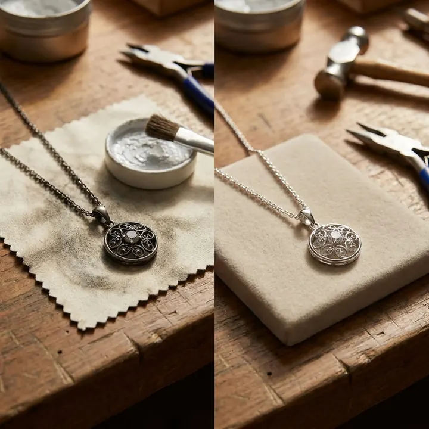

銀飾氧化與保養：黑掉不是壞掉
銀飾變黑，不是品質差，而是它「太誠實」——空氣裡的硫，讓它一點都不想裝年輕。

核心定義
銀飾變黑的正名是「硫化」（tarnishing）：銀與空氣中的硫化氫、硫氧化物反應，生成灰黑色的硫化銀（Ag₂S）薄膜——這是化學反應，不是品質問題。純銀（925 銀）比鍍銀更容易硫化，因為鍍層磨掉後露出銀底，一樣會黑。
一句話記住：銀的黑，是「硫的指紋」——它證明這件飾品真的是銀，也提醒你該保養了。
特徵與分類
| 銀飾類型 | 成分 | 硫化速度 | 特性 |
|---|---|---|---|
| 925 純銀 | 92.5% 銀 | 中等 | 主流、易硫化 |
| 999 足銀 | 99.9% 銀 | 較快 | 軟、易變形 |
| 鍍銀 | 基底+銀鍍層 | 視鍍層 | 鍍層磨損即硫化 |
| 藏銀/苗銀 | 銀銅合金 | 快 | 氧化成黑銅色 |
硫化速度與環境有關：潮濕、高溫、汗水、溫泉硫磺都會加速——所以「泡溫泉戴銀飾」是銀飾保養的大忌。
科學原理
硫化反應：4Ag + 2H₂S + O₂ → 2Ag₂S + 2H₂O——銀與硫化氫在氧氣參與下生成硫化銀。硫化銀是黑色薄膜，幾奈米厚就足以讓銀飾明顯變暗。
清潔的化學：用鋁箔+小蘇打（碳酸氫鈉）+熱水，可把硫化銀還原回銀——鋁與硫結合成硫化鋁，銀被「搶救」回來。這是家庭除硫最安全的方法，比磨砂膏溫柔得多。
鑑定與鑑別方法
- 看印記：925、S925、Sterling——純銀標記
- 看色澤：純銀氧化呈灰黑，黃銅氧化偏綠
- 測磁性：銀不具磁性（鐵製仿品會吸）
- 冰塊測試：銀導熱極快，冰塊融化速度高
- 謹防「藏銀」冒充純銀：藏銀含銅高、偏黑
市場行情與保養建議
行情（2026 年）：國際銀價每盎司約數百元新台幣，925 銀飾零售價以「工費+銀價」計——一條銀鏈新台幣數百至數千元。銀飾是「低門檻的貴金屬」，也是「高頻保養的飾品」。
提醒：銀飾變黑可用拭銀布、鋁箔小蘇打法清潔，但避免用研磨膏過度拋磨（會刮傷）；存放時放入夾鏈袋隔絕空氣。價格僅供參考，非投資建議。
常見誤區
恰恰相反——越純的銀越容易硫化。925 純銀變黑是正常化學，跟純度無關。
拭銀布含細微研磨劑——天天擦會磨掉銀面。正確頻率是「變黑了再擦」。
冷知識
從古希臘到 20 世紀，銀幣是國際貿易的硬通貨——你今天戴的銀飾，幾百年前可能是錢。
溫泉富含硫化物——戴銀飾泡湯，一次就能讓它黑到發亮。溫泉區的銀飾店，生意特別好。
反直覺觀點
刻意硫化讓銀飾呈現復古黑（oxidized silver）是珠寶工藝——它能襯托細節、製造陰影。所以「黑」不一定是髒，可能是設計。
同重量下銀價約是金的 1/80——銀飾的價值九成在工藝與設計。花大錢買「純銀」，買的是手藝不是金屬。